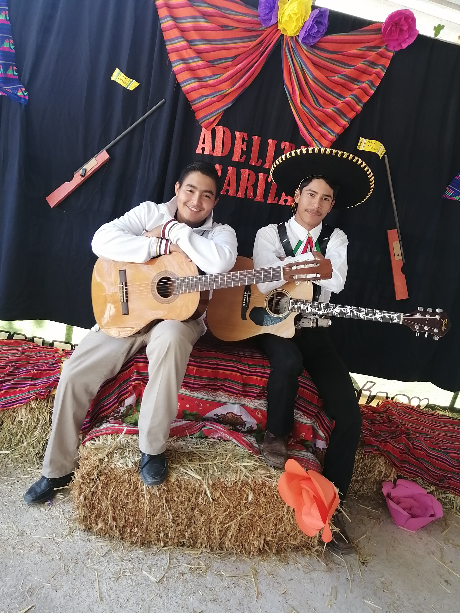
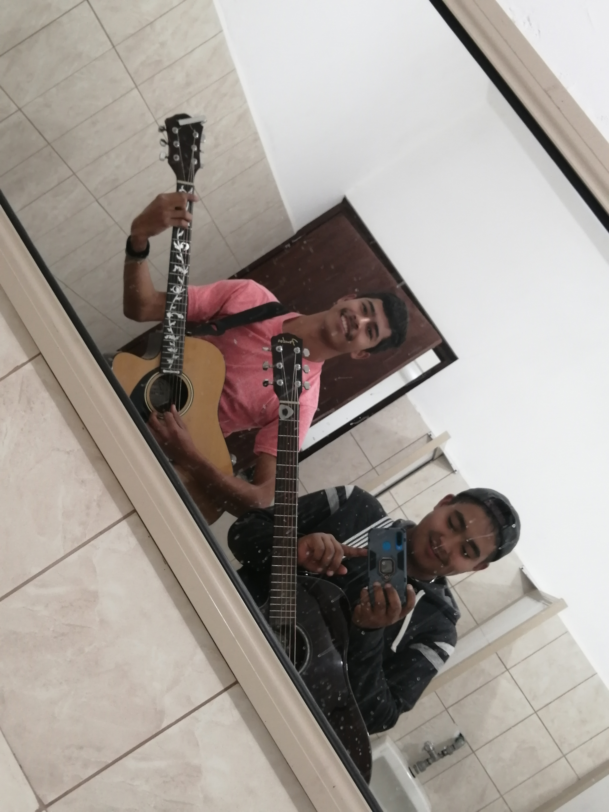
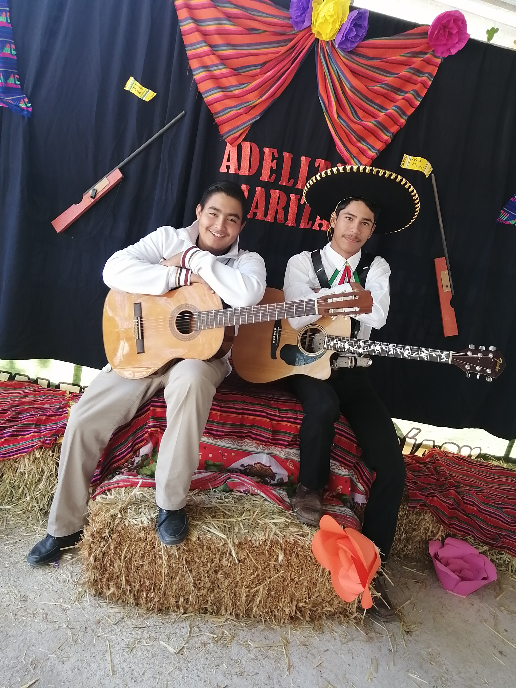
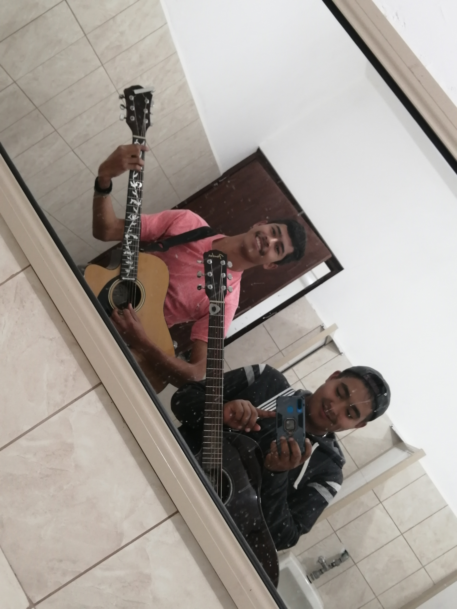

|
|
Mis proyectos o metas es llegar a ser un musico profecional, ya que me gusta mucho tocar diferentes tipos de instrumentos como la guitarra, acordeon, bajo electrico y bajo quinto. Desde pequeno me a gustado mucho la musica y mas del genero norteno y sierreno. Mi Sueno es ser un musico famoso y asi sera solo cuestion de echarle ganas.

 
